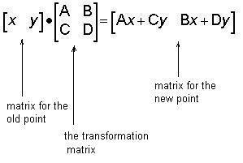

Changing Shapes With Matrices
from Don's book of that name in English (1995), and in
Japanese (2001),
with Ms. Noriko Arai,
here using an interactive Java applet created by Fukushima
Kazuhiro at IES in Japan
The form of the multiplication
of matrices used here is:

The reason Don uses this form is
that all his young students have done some graphing, where the points are in the
form (x,y). When he uses the matrix [x y] for the point (x,y) on the left, it is
natural and easily understood. The multiplication is done by going across in the
first matrix, and down in the second, multiplying, then adding.
See
Valorie's work in Don's sample problems from his book.
Applet
Choose the 4 numbers for your transformation matrix below.
What happens to the dog as a result of using your transformation matrix?
Do another one.
The idea for this applet is from
"Changing Shapes With Matrices"
by Don Cohen. '1995 Donald Cohen
To order
Don's materials
Using
trig to do rotations with matrices
Mathman home